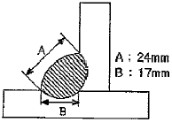
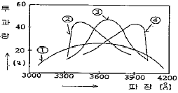
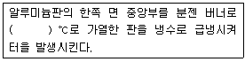

침투비파괴검사기사 (2014-03-02 기출문제)
1과목: 비파괴검사 개론
1. 초음파탐상시험의 장점이 아닌 것은?
- 결함으로부터의 지시를 곧바로 얻을 수 있다.
- 시험체의 한 면만을 이용하여 결함을 측정할 수 있다.
- 내부조직의 입도가 크고 기포가 많은 부품 등의 탐상에 유용하다.
- 침투력이 매우 높아 두꺼운 단면을 갖는 부품의 깊은 곳에 있는 결함도 용이하게 검출한다.
(정답률: 70%)

2. 홀 효과(Hall effect)를 이용하는 비파괴 검사법은?
- 광탄성법
- 전위차시험법
- 형광 서머그래피법
- 누설자속탐상검사
(정답률: 70%)
3. 다음 비파괴검사 방법 중 결함의 형상을 추정하기 곤란한 검사방법은?
- 침투탕상검사
- 와전류탐상검사
- 방사선투과검사
- 자분탐상검사
(정답률: 68%)
4. 누설검사를 계획하거나 시방서를 작성할 때 이용할 누설검사의 선택에서 가장 먼저 생각할 점은?
- 검사비용
- 설계압력
- 누설률의 범위
- 추적가스의 선택
(정답률: 65%)
5. 방사선투과시험에서 반가층이란?
- X, γ선이 물질 후면으로 투과되어 나온 방사선의 강도가 투과되기 전 표면에서의 강도의 반이 되는 물질의 두께이다.
- 방사선과 물질과의 상호작용시 이온화 과정에 의한 흡수가 필름안에서 일어나 이때의 자유전자들이 영상을 흐리게 하는 층을 말한다.
- 방사성 물질이 원래의 크기보다 반으로 줄어들 때의 구분선을 말한다.
- 방사선투과 사진의 질을 점검할 때 표준시험편을 사용하는데 이의 등급 간의 분류를 말한다.
(정답률: 68%)
6. WC 분말과 Co 분말을 압축성형한 후 약 1400℃ 로 소결시켜 바이트와 같은 공구에 이용되는 합금은?
- 초경합금
- 고속도강
- 두랄루민
- 엘렉트론합금
(정답률: 62%)
7. Fe의 비중과 용융점으로 옳은 것은?
- 비중은 2.7이며, 용융점은 660℃이다.
- 비중은 7.8이며, 용융점은 1538℃이다.
- 비중은 8.9이며, 용융점은 1083℃이다.
- 비중은 10.2이며, 용융점은 2610℃이다.
(정답률: 70%)
8. 철-탄소 평형상태도에서 공정반응의 온도로 옳은 것은?
- 723℃
- 910℃
- 1130℃
- 1538℃
(정답률: 43%)
9. 일반적으로 특수강에 첨가되는 특수 원소의 효과에 대한 설명으로 틀린 것은?
- 질량효과 증대
- 담금성 향상
- 임계냉각속도 상승
- 마텐자이트 변태점 저하
(정답률: 52%)
10. 오스테나이트계 스테인리스강의 특성에 관한 설명 중 틀린 것은?
- 내식성이 우수하다.
- 내충격성이 크다.
- 기계가공성이 좋다.
- 강자성이며, 인성이 좋다.
(정답률: 62%)
11. 단결정을 이용한 집적회로용 금속재료로 전자적 성능이 가장 좋은 원소는?
- S
- Si
- Pb
- Cu
(정답률: 52%)
12. 다이캐스팅용 재료로 가장 적합한 것은?
- 주강
- 주철
- 특수강
- 아연 합금
(정답률: 52%)
13. 충격시험에 대한 설명으로 옳은 것은?
- 충격시험은 정적하중시험이다.
- 강의 인성이나 취성을 알 수 있다.
- 충격시험은 재료에 내부 충격을 주어 피로현상을 측정한다.
- 충격값은 재료에 다중 충격을 주었을 때 발산되는 에너지로 나타낸다.
(정답률: 51%)
14. 가장 높은 온도를 측정할 수 있는 열전대 재료는?
- 철-콘스탄탄
- 크로멜-알루멜
- 백금-백금ㆍ로듐
- 구리-콘스탄탄
(정답률: 54%)
15. Cartridge brass 에 대한 설명으로 틀린 것은?
- 가공용 황동이다.
- 70%Cu + 30%Zn 황동이다.
- 판, 봉, 관, 선을 만든다.
- 금박대용으로 사용하며, 톰백이라고도 한다.
(정답률: 61%)
16. 불활성가스 텅스텐 아크용점(TIG용접)에서 아크쏠림(Arc Blow 또는 Magnet Blow) 현상이 일어나는 원인이 아닌 것은?
- 자장 효과(magnetic effects)
- 용접 전류 조정이 너무 낮게 되었을 때
- 텅스텐 전극봉이 탄소에 의해 오염되었을 때
- 풋 컨트롤(foof control)장치로 전류를 강소시킬 때
(정답률: 52%)
17. 용접 비드의 가장자리에서 모재 쪽으로 발생하는 균열은?
- 루트 균열
- 토우 균열
- 비드 밑 균열
- 라멜라 테어
(정답률: 53%)
18. 그림과 같은 필릿 용접에서 용접부의 이론 목두께는 약 몇 mm인가?

- 12
- 14
- 17
- 24
(정답률: 54%)
19. 서브머지드 아크 용접의 특징에 대한 설명으로 옳은 것은?
- 용입이 낮다.
- 용융속도가 느리다.
- 용착속도가 느리다.
- 기계적 성질이 우수하다.
(정답률: 65%)
20. 저수소계 피복아크 용접봉의 건조온도 및 건조시간이로 다음 중 가장 적합한 것은?
- 100~150℃, 3~4시간
- 150~200℃, 2시간
- 200~300℃, 3시간
- 300~350℃, 1~2시간
(정답률: 58%)
2과목: 침투탐상검사 원리
21. 침투탐상시험시 전기 공급이 어렵고, 수도장치도 없다면 어떤 방법이 가장 유리한가?
- 용제제거성 형광침투탐상시험
- 용제제거성 염색침투탐상시험
- 후유화성 형광침투탐상시험
- 후유화성 염색침투탕상시험
(정답률: 71%)
22. 침투탐상검사의 침투성능에 간접적으로 영향을 미치는 특성 중 상대밀도에 대한 설명이다. 옳은 것은?
- 침투액의 상대 습도는 침투성능에 현저한 영향은 미치지 않지만 대부분의 침투액의 상대밀도는 16℃에서 0.86~1.06 범위이다.
- 침투액의 상대습도는 침투성능에 영향을 미치고 상대밀도 역시 15℃에서 0.86~1.06 범위이다.
- 침투액의 상대밀도는 4~52℃ 범위에서 0.86~1.06범위이고, 침투액의 상대습도는 침투성능에 영향을 미치지 않는다.
- 침투액의 상대밀도가 16℃에서 0.86~1.06 범위 중에 침투성능이 현격히 줄어든다.
(정답률: 40%)
23. 보관이나 기타의 조건으로 인해 침투제의 형광성능을 평가할 경우 통상적으로 어떤 결과를 비교하는가?
- 지시에서 발산되는 실제 빛의 양을 조도계로 측정
- 재료를 형광화 하는데 소요되는 자외선의 양을 강도계로 측정
- 다른 침투제와 비교하여 형광물질에서 발산되는 빛의 상대량을 육안으로 관찰
- 주위에서 발산되는 빛과 비교하여 형광물질에서 발산되는 빛의 상대량을 로그 그래프로 비교
(정답률: 49%)
24. 특별한 침투탕상검사 방법으로 전도성이 없는 재료의 열린결함에 약간의 전도도가 있는 액체를 침투시키고, 액체를 제거한 다음 현상제 역할을 하는 탄산칼슘의 미립자를 사용하는 침투탐상방법은 무엇인가?
- 수세성 침투탐상검사
- 하전입자법
- 용제제거성 침투탐상검사
- 여과 입자법
(정답률: 55%)
25. 침투탐상시험시 건식 현상제보다 습식 현상제를 택할 수 있는 시험부품으로 적당한 것은?
- 표면이 거친 주물
- 다듬질한 톱니바퀴와 L형 부품
- 평평하고 매끄러운 표면의 부품
- 습식 현상제는 위의 어느 부품에도 사용할 수 없다.
(정답률: 53%)
26. 형광침투탐상시험에서 자외선들은 어떤 목적 때문에 사용하는가?
- 침투제가 형광을 발하게 하기 위해서
- 침투제의 모세관현상을 도와주기 위해서
- 표면의 과잉침투제를 중화시키기 위해서
- 탐상부분의 표면장력을 줄이기 위해서
(정답률: 77%)
27. 주조품에서 주로 내부 모서리 부분에 선형 지시형태로 나타나는 결함은?
- 수축관(Shrinkage)
- 핫티어(Hot tear)
- 콜드셧(Cold shut)
- 겹침(Laps)
(정답률: 46%)
28. 다음 중 의사지시모양으로 볼 수 없는 것은?
- 외부에 의한 오염지시
- 전처리가 부족한 지시
- 균열에 의한 불연속 지시
- 제거처리가 부족한 지시
(정답률: 76%)
29. 침투탐상시험시 검출하기 가장 어려운 결함은 어떤 것인가?
- 깊이가 얕고 넓이가 큰 결함
- 깊이가 깊은 구멍
- 단조 겹침
- 깊이가 깊고 넓이가 작은 결함
(정답률: 47%)
30. 그림에서 침투탐상시험시 자외선등에 사용될 필터로서 가장 적절한 빛의 투과상태를 나타낸 곡선인 것은?

- ①
- ②
- ③
- ④
(정답률: 58%)
31. 무현상법에 대한 설명으로 옳지 않은 것은?
- 현상과정에서 현상제를 적용하지 않고 관찰하는 방법이다.
- 현상제를 적용하는 검사방법에 비해 검사 감도가 낮다.
- 시험체에 열을 가해 침투제가 시험면 밖으로 나오게 하여 관찰하는 방법이다.
- 용제제거성 염색침투탐상시험에 적용되는 방법이다.
(정답률: 47%)
32. 침투탐상시험에서 침투액과 용제(solvent)에 함유된 유황이나 염소의 함량은 제한한다. 다음 중 특히 사용상 제한을 하는 재질은?
- 알루미늄 합금
- 니켈 합금
- 마그네슘 합금
- 동 합금
(정답률: 53%)
33. 다음은 침투탐상시험에 사용되는 알루미늄 비교시험편의 제조방법을 설명한 것이다. ()안에 적합한 온도범위는?

- 300~330℃
- 410~430℃
- 510~530℃
- 600~630℃
(정답률: 68%)
34. 후유화성 형광침투탕상시험에서 유화제를 적용하는 방법으로 틀린 것은?
- 시편에 분무시키는 방법
- 시편에 붓칠하는 방법
- 시편을 침지시키는 방법
- 시편에 부어서 적용하는 방법
(정답률: 57%)
35. 표면에 오염물질이 존재함에도 불구하고 침투제가 균일하고 일정하게 전 표면에 걸쳐 도포되도록 해줄 수 있는 침투제의 기능을 가장 잘 설명한 것은?
- 점성이 낮다.
- 점성이 높다.
- 적심능력이 크다.
- 증발 효과가 적다.
(정답률: 70%)
36. 정전 도장법을 이용한 분무법의 일종인 정전 도포법의 특성은?
- 분무 총(spray gun) 끝에 전극이 부착되어 있다.
- 저주파 발생장치가 필요하다.
- 침투액이나 현상제는 이동이 빨라진다.
- 결합부의 전처리가 필요치 않다.
(정답률: 61%)
37. 유화제의 공정 관리 시험 항목에 속하지 않는 것은?
- 물과 침투제에 의한 오염도 측정
- 감도 시험
- 형광 휘도 측정
- 자외선에 대한 안정성 측정
(정답률: 35%)
38. 다공성 세라믹 재료로서 고온에 방치되었던 제품의 검사방법으로 효과적인 것은?
- 입자 여과법(Filtered Particle Method)
- 하전 입자법(Electrified Particle Method)
- 취성 에나멜 사용법(Brittle Enamal Method)
- 유화성 색체 대비법(Emulsifiable color contrast Method)
(정답률: 58%)
39. 침투탐상공정은 일반적인 침투탐상방법과 동일하고, 사용하는 현상제는 용제 현상현탁성을 사용하며 염색침투탐상법의 처리 절차와 동일한 방법으로 적용하는 시험방법은?
- 하전 입자법
- 여과 입자법
- 역형광법
- 휘발성 액체법
(정답률: 49%)
40. 침투탐상검사에 사용되는 대비시험편의 사용목적으로 틀린 것은?
- 탐상제 제작시 제품의 품질관리
- 침투액의 침투인자 변수 측정시험
- 조작방법이나 조작조건의 적합여부
- 사용하는 탐상제의 품질과 성능의 유지 관리
(정답률: 46%)
3과목: 침투탐상검사 시험
41. 다음 중 침투탐상검사에 나타난 의사지시의 원인인 것은?
- 가스 구멍
- 주조품 표면의 탕계
- 검사원의 손에 묻은 침투액
- 주조품의 핀홀
(정답률: 64%)
42. 다음 중 현상제에 필요한 일반적 특성으로 틀린 것은?
- 침투액을 흡출하는 능력이 좋아야 한다.
- 침투액을 분산시키는 능력이 좋아야 한다.
- 배경 색체와 구별될 수 있는 색채이어야 한다.
- 시험 표면에 대해 분리가 잘되고 형상막이 생기기 않아야 한다.
(정답률: 45%)
43. 침투탐상시험의 현상제 성능검사에 대한 설명으로 틀린 것은?
- 건식 현상제는 육안으로 관찰한다.
- 습식 현상제는 비중계로 농도를 측정한다.
- 건식 현상제는 감도시험을 실시해야 한다.
- 습식 현상제는 그 제조회사의 권고치와 같으면 사용해도 좋다.
(정답률: 31%)
44. 다음 중 미세하고 좁은 표면균열을 찾는데 가장 명료도가 좋은 방법은?
- 수세성 염색침투탐상
- 수세성 형광침투탐상
- 속건식 염색침투탕상
- 후유화성 형광침투탐상
(정답률: 59%)
45. 용제제거성 염색침투탐상시험의 장점에 대한 설명인 것은?
- 휴대하기에 용이하다.
- 10℃ 이하의 온도에서도 쉽게 사용된다.
- 다른 방법에 비하여 감도가 아주 우수하다.
- 자외선등을 사용하면 미세한 결함을 찾기 용이하다.
(정답률: 68%)
46. 에어로졸 분무통에 들어 있는 침투제 통이 추운 겨울철에 기온이 하강하여 통내의 가스압이 내려가 분무상태가 곤란한 경우, 다음의 기술된 내용 중 어떻게 조치함이 가장 적당한가?
- 통을 나로옆에 놓아 온도를 상온으로 올려 사용한다.
- 60℃의 항온실 중에 놓아 온도를 올려 사용한다.
- 35℃미만의 온수에 넣어 온도를 상승시켜 사용한다.
- 얼은 통은 온도를 상승시켜도 제기능을 발휘 못하기 때문에 폐기한다.
(정답률: 56%)
47. 침투탐상시험에 사용되는 일반적인 자외선등의 종류는?
- 고압 백열등
- 튜브형 BL 형광 램프
- 밀봉된 수은등 램프
- 금속제 탄소아크 전구
(정답률: 69%)
48. 대형부품에 현상제 적용시 일반적인 방법 중 가장 편리한 것은?
- 담그는 것
- 걸레질
- 솔질
- 분무
(정답률: 64%)
49. 침투탐상검사시 원형지시로 검출될 가능성이 높은 결함의 종류는?
- 균열(Crack)
- 콜드 셧(Cold shut)
- 핫티어(Hot tear)
- 기공(Porosity)
(정답률: 68%)
50. 수도 및 전원 설비가 없는 장소에서 침투탐상검사를 실시할 경우 어느 침투액을 사용하는 것이 좋은가?
- 용제제거성 염색침투액
- 용제제거성 형광침투액
- 후유화성 염색침투액
- 후유화성 형광침투액
(정답률: 65%)
51. 침투제를 적용한 후에 검사체의 표면에 침투액이 균일하게 분포되고 세척처리를 안정되게 실시할 수 있으며, 경제적으로도 재사용을 위하여 검사체 표면에 필요 이상으로 도포되어 있는 침투액을 수거하는 처리방법은?
- 유화
- 배액
- 침지
- 건조
(정답률: 61%)
52. 니켈 합금의 침투탐상검사시 침투제에 섞여 있어서는 안 되는 성분은?
- 형광물질
- 유화제/기름
- 탄소/기름
- 황
(정답률: 68%)
53. 염색침투탐상시 검출되는 지시는 보통 어떻게 나타나는가?
- 회색의 바탕색에 대해 강한 빨간색의 빛으로 나타난다.
- 회색의 바탕색에 대해 빨간색으로 나타난다.
- 하얀색의 바탕색에 대해 빨간색으로 나타난다.
- 강한 하얀색의 바탕색에 대해 청록색으로 나타난다.
(정답률: 66%)
54. 침투탐상검사시 검사결과의 판독은 현상시간이 경과한 후 수행하게 되는데 현상시간에 대해 가장 적합한 설명은?
- 현상제의 적용 후 불연속부에 있던 침투액이 현상제 위로 스며 나오는 시간
- 현상제를 적용 후 현상제가 시험면 위에서 완전히 건조될 때까지의 시간
- 침투액이 현상제 위로 스며 나온 후 지시의 형태와 크기가 퍼지기 전까지의 시간
- 현상시간은 현상제의 종류에 따라 달리 규정되어 있다.
(정답률: 29%)
55. 침투탐상시험시 정교한 부품을 세척하려 할 때 가장 알맞은 세척방법은?
- 기화가스 세척
- 초음파 세척
- 알칼리 세척
- 용제세척
(정답률: 66%)
56. 형광침투탐상시험의 경우 결함지시모양의 관찰에 사용되는 자외선등의 입사파장을 A라 하고, 형광침투액과 자외선등이 반응하여 발생시키는 형광의 파장을 B라고 할 때 A 와 B의 파장범위로 옳은 것은?
- A: 320~400mm, B: 220~320mm
- A: 350~400mm, B: 470~580mm
- A: 630~740mm, B: 350~400mm
- A: 570~820mm, B: 450~570mm
(정답률: 52%)
57. 침투탐상검사에서 일반적으로 맨 마지막으로 수행해야 하는 절차는?
- 판독
- 평가
- 후처리
- 제거처리
(정답률: 63%)
58. 다음 침투탐상검사 공정 중 배액처리 시설이 필요한 처리과정으로만 조합된 것은?
- 전처리, 침투처리
- 세척처리, 건조처리
- 건조처리, 건식현상처리
- 침투처리, 습식현상처리
(정답률: 53%)
59. 침투탐상시험에서 유화제를 적용시 솔질법을 사용하지 않는 가장 적합한 이유는?
- 솔질은 시험체를 항상 완전하게 도포할 수 없어 세척하기에 어려운 부분을 남긴다.
- 솔질은 불규칙적으로 침투액과 유화제를 혼합시켜 유화시간의 정확한 조절을 불가능하게 만든다.
- 솔질자체는 해롭지 않으나 많은 종류의 솔의 재질이 유화제와 결합하여 침투액과 시험체에 오염을 남긴다.
- 솔질은 검사 중에 줄무늬를 나타나게 한다.
(정답률: 50%)
60. 알루미늄 재질로 생산한 제품을 침투탐상검사할 때 침투시간을 가장 길게 하여야 하는 결함은?
- 용접부의 갈라짐
- 단조품의 갈라짐
- 용접부의 융합불량
- 주조품의 쇳물경계
(정답률: 58%)
4과목: 침투탐상검사 규격
61. 보일러 및 압력용기에 대한 침투탐상검사(ASME Sec.V, Art.6)에서 최종 판독 전 현상시간의 적용 시점에 대한 설명으로 옳은 것은?
- 건식 현상제인 경우 현상제 적용 직전부터 시작
- 건식 현상제인 경우 침투제 적용 직후부터 시작
- 습식 현상제인 경우 현상제가 건조된 직후부터 시작
- 습식 현상제인 경우 현상제 피막이 형성되기 직전부터 시작
(정답률: 43%)
62. 침투탐상 시험방법 및 침투지시모양의 분류(KS B 0816)에서 침투탐상 시험방법을 선정할 때에 고려 대상이 아닌 것은?
- 예상되는 흠의 종류와 크기
- 시험원의 자격 종류와 경험
- 시험체의 치수와 수량
- 시험체 표면거칠기와 탐상제 성질
(정답률: 59%)
63. 항공우주용 기기의 침투탐상 검사방법 (KS W 0914)에서 규정하는 유화제의 제거성을 점검하는데 사용하는 규격은?
- ASTM D 95
- MIL STD 45662
- MIL STD 792
- MIL I 25135
(정답률: 35%)
64. 보일러 및 압력용기에 대한 표준침투탐상검사(ASME Sec.V Art.24 SE-165)에 의한 침투탐상시험 중 1종과 2종의 차이점은?
- 과잉 침투액 세척처리 방법이 다르다.
- 건조처리 방법이 다르다.
- 1종은 염색 침투탐상법이고, 2종은 형광 침투탐상법이다.
- 1종은 형광 침투탐상법이고, 2종은 염색 침투탐상법이다.
(정답률: 47%)
65. 침투탐상 시험방법 및 침투지시모양의 분류(KS B 0816)에서 후유화성 침투액을 스프레이 노즐로 세척할 때에 올바른 것은?
- 기름을 275kPa 압력 이하에서 사용한다.
- 기름을 275kPa 압력 이상에서 사용한다.
- 물을 275kPa 압력 이하에서 사용한다.
- 물을 275kPa 압력 이상에서 사용한다.
(정답률: 62%)
66. 항공우주용 기기의 침투탐상 검사방법(KS W 0914)에 따른 항공우주용 제품의 최종 수령검사에 적용해서는 안 되는 침투탐상검사방법은?
- 염색침투 용제법
- 형광침투 용제법
- 형광침투 유화제법
- 이원성침투 유화제법
(정답률: 38%)
67. 침투탐상 시험방법 및 침투지시모양의 분류(KS B 0816)에 따르면 라미네이션(Lamination)은 어느 침투지시모양에 속하겠는가?
- 연속 침투지시모양
- 선상 침투지시모양
- 분산 침투지시모양
- 원형상 침투지시모양
(정답률: 55%)
68. 침투탐상 시험방법 및 침투지시모양의 분류(KS B 0816)에 의해 침투탐상시험을 할 때 원칙적으로 제한하는 유화시간은? (단, 기름베이스 유화제로서 염색 침투액인 경우이다.)
- 30초 이내
- 1분 이내
- 3분 이내
- 5분 이내
(정답률: 51%)
69. 침투탐상 시험방법 및 침투지시모양의 분류(KS B 0816)의 침투탐상시험에서 침투지시 모양의 관찰은 언제 하는 것이 바람직한가?
- 현상제 건조 후 즉시
- 현상제 적용 후 7~60분 사이
- 현상제 적용 후 5~10분 사이
- 현상제 적용 후 즉시
(정답률: 62%)
70. 보일러 및 압력용기에 대한 침투탐상검사(ASME Sec.V, Art.6)에 따라 원자력발전 부품에 형광침투탐상시험을 적용시 검사체의 표면온도가 30℉일 때 옳은 설명은?
- 현상제를 30℉로 맞춘 후 시험한다.
- 자분탐상검사를 적용한다.
- 침투탐상제를 30℉로 맞춘 후 시험한다.
- 부품을 40~125℉ 범위로 맞춘 후 시험한다.
(정답률: 68%)
71. 침투탐상 시험방법 및 침투지시모양의 분류(KS B 0816)에 따라 전수검사를 한 경우 합격된 시험체에 표시를 필요로 하는 경우의 표시 방법의 설명으로 틀린 것은?
- P자를 각인한다.
- 황색으로 착색한다.
- P자를 부식한다.
- 적갈색으로 착색한다.
(정답률: 56%)
72. 보일러 및 압력용기에 대한 표준침투탐상검사(ASME Sec.V Art.24 SE-165)에 의거하여 침투탐상시험을 하는 경우 최소 현상시간은?
- 3분
- 5분
- 7분
- 10분
(정답률: 28%)
73. 항공우주용 기기의 침투탐상 검사방법(KS W 0914)에 의한 침투탐상시험시 건식현상제의 최대 허용 체류 시간은?
- 1시간
- 2시간
- 3시간
- 4시간
(정답률: 35%)
74. ASME Ⅷ Div.Ⅰ 규격의 침투탐상검사에서 용접부 관련지시로 평가하는 최소 크기는 얼마인가?
- 1/32 인치
- 1/16 인치
- 3/16 인치
- 길이가 너비의 3배
(정답률: 61%)
75. 보일러 및 압력용기에 대한 침투탐상검사(ASME Sec.V Art.6)에 의해 용접부위를 침투탐상시험할 때 용접선을 중심으로 양측으로 적어도 어느 정도까지 전처리를 하여야 하는가?
- 25.4mm(1 inch)
- 38.1mm(1,5 inch)
- 50.8mm(2.0 inch)
- 63.5mm(2.5 inch)
(정답률: 63%)
76. 침투탐상 시험방법 및 침투지시모양의 분류(KS B 0816)에 따른 시험기록의 작성시 규정된 기재 사항이 아닌 것은?
- 침투액, 유화제, 세척액 및 현상제의 명칭
- 시험 연월일
- 시험체의 품명
- 시험 결과의 합부 판정
(정답률: 49%)
77. 침투탐상 시험방법 및 침투지시모양의 분류(KS B 0816)에 따른 침투탐상시험에서 결함의 종류가 아닌 것은?
- 연속 결함
- 불연속 결함
- 분산 결함
- 독립 결함
(정답률: 60%)
78. 침투탐상 시험방법 및 침투지시모양의 분류(KS B 0816)에 따른 침투탐상시험을 할 때의 시험장치에 대한 설명으로 틀린 것은?
- 수세성 침투액을 사용하는 경우 세척장치로 스프레이 노즐을 준비한다.
- 후유화성 침투액을 사용하는 경우 세척장치로 흐르는 물로 세척하는 기구를 준비한다.
- 형광 침투액을 사용하는 경우의 세척장치는 원칙적으로 자외선 조사장치를 갖춘 것으로 한다.
- 휴대용이라도 건조장치에는 온도조절장치를 꼭 부착하여야 한다.
(정답률: 43%)
79. 보일러 및 압력용기에 대한 표준침투탐상검사(ASME Sec.V Art.24 SE-165)에 따라 플라스틱을 탐상할 때 규정 온도에서 규정하고 있는 최소 침투시간으로 적합한 것은?
- 2분
- 5분
- 15분
- 30분
(정답률: 57%)
80. 보일러 및 압력용기에 대한 침투탐상검사(ASME sec.V Art.6)에 따라 습식 현상제를 적용하는 방법이 잘못된 것은?
- 수용성 현상제는 표면의 건조 여부와 관계없이 적용할 수있다.
- 수용성 현상제를 적용하는 경우 건조시간 단축을 위해 52℃ 이상 올라가지 않게 하는 범위 내에서 따뜻한 공기를 사용하여 가열할 수도 있다.
- 수현탁성 현상제를 적용하는 경우 수세 침투제를 사용한다면 건조된 표면에만 적용할 수 있다.
- 수현탁성 현상제를 적용하는 경우 후유화 침투제 혹은 용제제거 침투제를 사용한다면 과잉침투제 제거 후 바로 적용하며, 건조는 자연건조 시켜야 한다.
(정답률: 26%)
내부조직의 입도가 크고 기포가 많은 부품 등의 탐상에 유용한 이유는 초음파가 공기나 기포 등의 경계면에서 반사되기 때문입니다. 따라서 내부에 기포가 많은 부품이나 두꺼운 단면을 갖는 부품의 깊은 곳에 있는 결함도 용이하게 검출할 수 있습니다. 또한, 결함으로부터의 지시를 곧바로 얻을 수 있어 검사 시간이 단축되는 장점도 있습니다.